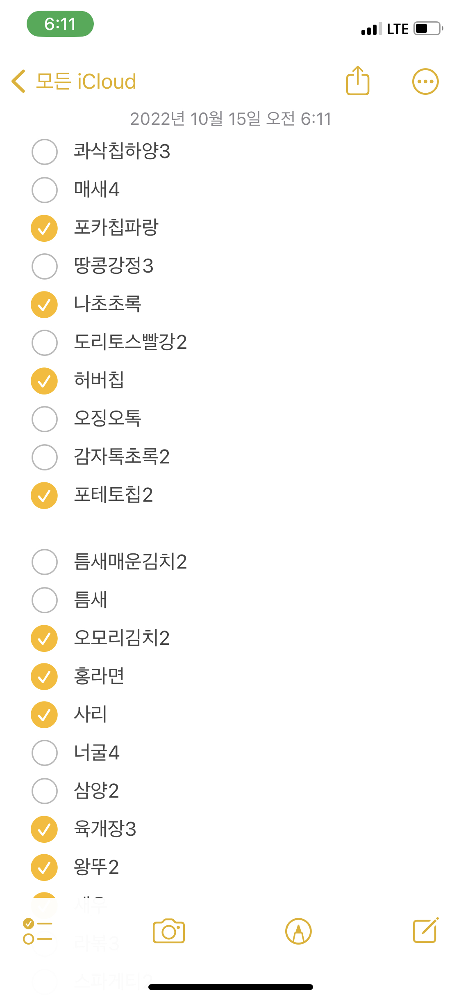
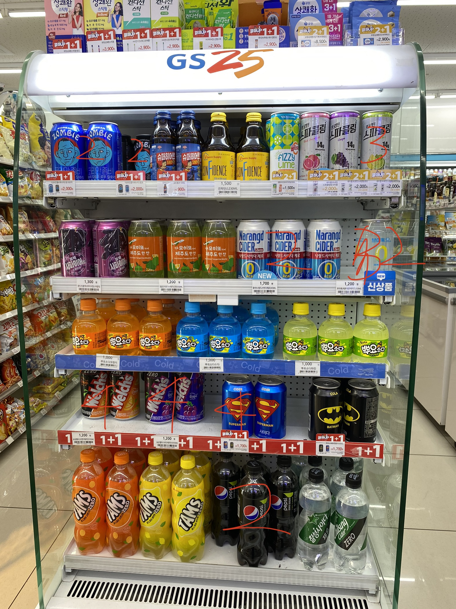

업무꿀팁

빠르게 상품충전 하는 방법!
과자와 라면, 음료수 등 비어있는 물건을 채우는 것도 편의점
근무자의 일이죠. 그런데 어떤 상품이 비어있는지 외우고 창고에
가서 꺼내오고, 다시 뭐가 비었는지 보고 또 창고에 가는 일을
반복하면 다리가 너무 아프죠. 창고에 1-2번만 가도 되는 2가지
방법을 알려드릴게요.
첫 번째, 메모앱을 활용한 방법

진열대를 보고, 비어있는 상품의 이름과 객수를 입력해요.
상품이름은 자신만의 줄임말을 쓰면 더 빨리 입력할 수 있어요.
바구니 여러개를 들고 창고에 가서, 입력된 메모에 적힌 상품들을
바구니에 담아요. 방금 한 번 훑었던 상품들이기 때문에, 상품을
보면 메모에 있던 건지 없던 건지 어느정도 빠른 판단이 돼요.
마지막에, 체크 안 된 상품이 진짜 창고에 없는지만 한 번 더
확인해주면 더 정확해져요.
두 번째, 그림 메모를 활용한 방법

상품의 이름을 잘 모르거나, 이름만 봐서는 상품을 빠르게 담기
어려울 것 같을 땐 그림메모를 활용해요.
위 사진을 잘 보면, 상품 위에 빨간색으로 숫자가 적혀있어요. 해당
상품이 얼마나 비었는지를 표시하는 숫자죠. 이걸 적고 마찬가지로
창고에 가서 사진에 적힌 숫자만큼 가져오면 돼요.
한 번 해보세요 !
더 이상 상품 가지러 창고에 여러번 왔다갔다 하지 마세요. 메모를
활용해서, 단 한번만에 필요한 상품을 모두 가져오세요!